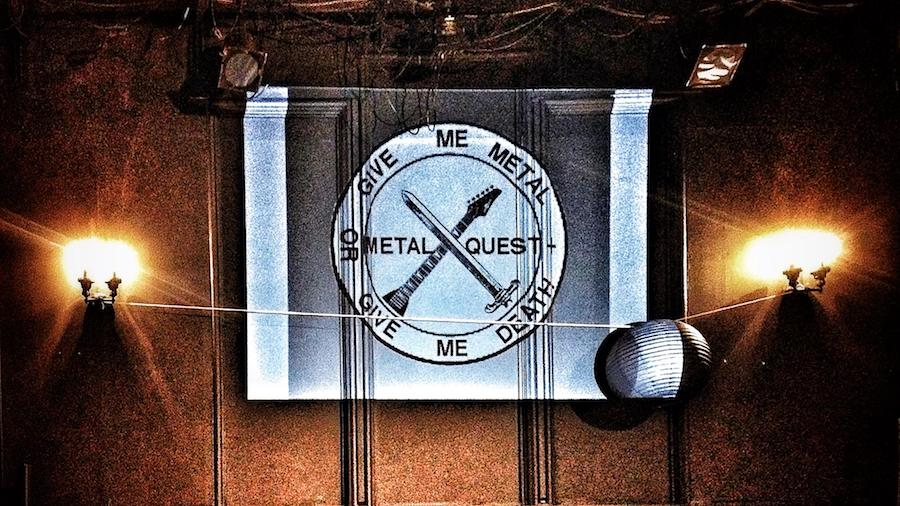
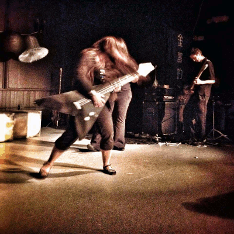

 |  |
In 2012, the Bloody Noes worked together with Jeffery Chase, aka Roger Houston, to realize his dream of creating a "metal opera" about Qin Shi Huangdi, the first Emperor of China. In a cast led by John Schoen playing QSH, old and new friends and collaborators acted as Qin Shi Huangdi's subjects in a very symbolic retelling of his life. Cast includes Masumi as every assassin (many amazing stage deaths), Kate Stathis, Kameron Ackerman, Ian Downey, Kisha Cummins, Nick Marquis, and DJ Cardboard as Spirit of Metal. Jeff himself shredded on guitar accompanied by Chris Reeg's electronic sounds. Possibly Marc Bollman narrated. Script: Jeffrey Chase. Performed at MUCCC Theater by the grace of John Borek.
Back to Borek shows
Back to Misc perfs